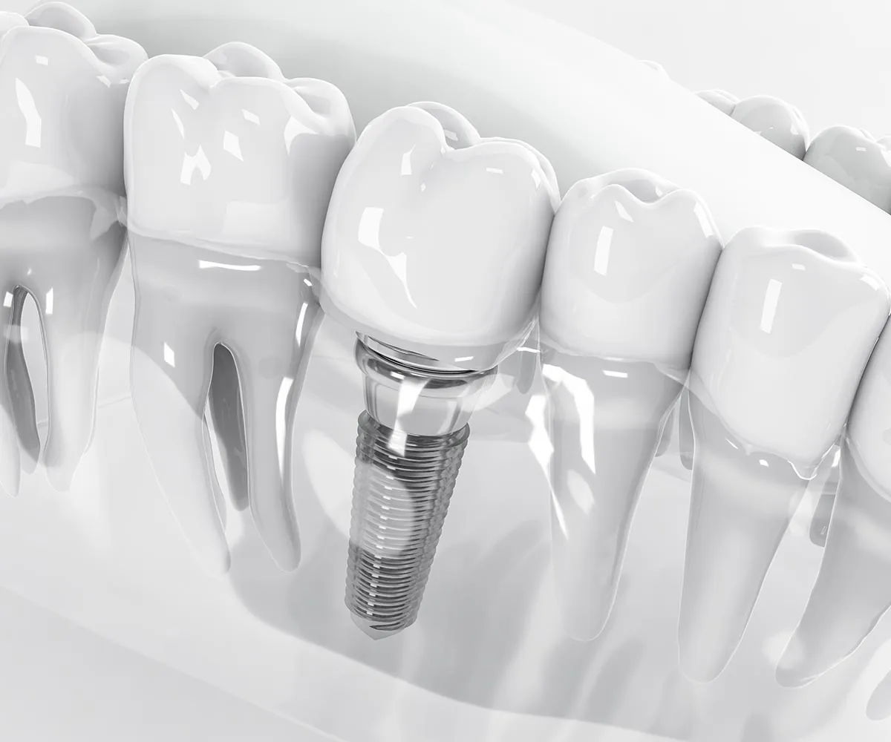
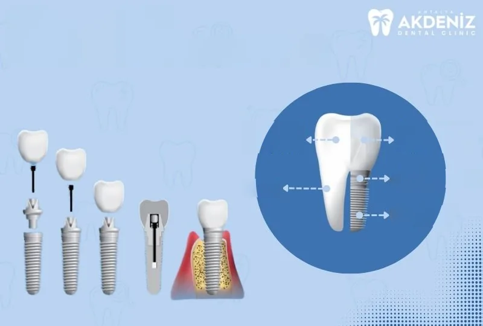
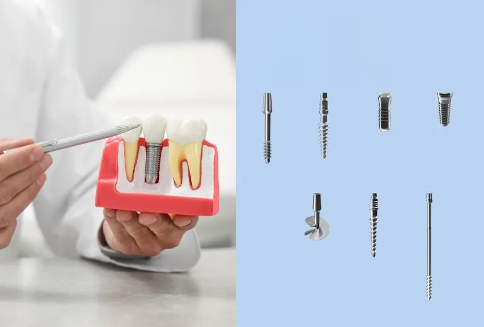
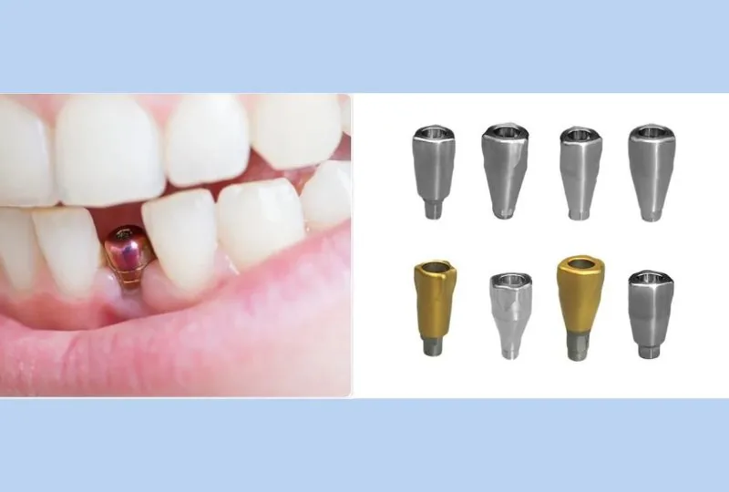
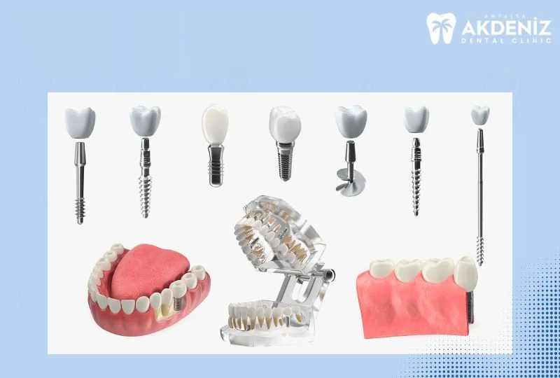

Kompleksowy przewodnik po nowoczesnym rozwiązaniu w przypadku utraty zębów
Implanty stomatologiczne znacząco zmieniły dziedzinę stomatologii odtwórczej. Jako preferowana opcja wymiany zębów, oferują one liczne korzyści w porównaniu z tradycyjnymi rozwiązaniami.
Implant dentystyczny to tytanowy wkład, który jest chirurgicznie umieszczany w kości żuchwy i służy jako sztuczny korzeń zęba. Implant łączy się z naturalną kością, tworząc mocną podstawę dla korony lub sztucznego zęba.

Budowaimplantu zębowegoKorona naturalnaKorzeńKorona na implancieŁącznikImplantBudowa implantu zębowego: korona naturalna, korzeń, korona na implancie, łącznik, implant

Implant zębowyImplant zębowy

ŁącznikŁącznik

Rodzajeimplantów zębowychRodzaje implantów zębowych
Możesz jednak zapytać: „Co sprawia, że implanty stomatologiczne są lepsze od innych opcji uzupełnienia zębów?”.
Unikalną zaletą implantów stomatologicznych jest ich zdolność do utrzymywania i stymulowania naturalnego wzrostu kości. Cecha ta ma kluczowe znaczenie w zapobieganiu utracie kości w szczęce. Ponadto implanty stomatologiczne zapewniają niezrównaną stabilność sztucznych zębów, zapewniając użytkownikowi komfort i pewność siebie.
Innym częstym pytaniem jest: „Jaki jest wskaźnik powodzenia implantów dentystycznych?”.
Implanty dentystyczne mają wysoki wskaźnik powodzenia, często przekraczający 95%. Można to przypisać ich konstrukcji i zastosowanym materiałom, które są biokompatybilne i dobrze akceptowane przez organizm.